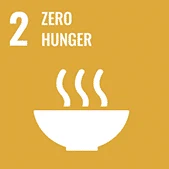
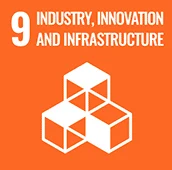
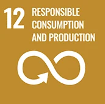
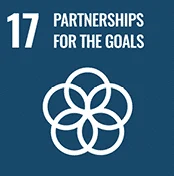

01 · Our approach
Benefits, burdens and evidence
AeroSense links a living olfactory-receptor layer, custom fluorescence readout and a fly-inspired classifier. Sustainability asks whether that system improves a real food decision, who benefits, and what resources it consumes. Our Human Practices work guides that question; every potential benefit below is paired with a limitation and a next measurement. [1]
One connected system
The Brundtland framework asks us to meet present needs while preserving future generations’ ability to meet theirs. For AeroSense, that means considering food loss, affordability and the footprint of the device together. [2]
Systems thinking helps us follow consequences beyond the sensor: a useful alert could reduce late discard, while cartridges add waste or pricing excludes smaller producers. Resilience means retaining a useful function as conditions change. [3] We use the UN Sustainable Development Goals to organize these connected questions. [4]
| Dimension | Track A · Export supply chain | Track B · Stored food |
|---|---|---|
| Intended decision | Earlier disease, ripeness and quality triage for banana and mango lots; tea is a later extension. | Screen pathogen- or mold-associated VOCs in stored food and communicate when confirmation is needed. |
| Evidence today | Agricultural-institution interviews and mentor review. Banana is the narrowed commercial beachhead; exporters and packing houses have not yet been interviewed. | Laboratory development and an early survey summary (n = 28). A later total of 107 is team reported; updated item-level results are unavailable. |
| Next evidence | Batch-level loss records, detection lead time and a cost model showing who pays and who benefits. | Verified survey counts, validated screening performance and user tests of risk-tier communication. |
| Claim boundary | No measured shipment-loss reduction, paid pilot or demonstrated field performance. | No food-safety verdict, mycotoxin certification or population-wide conclusion from the survey. |
What we include
- Living OR/Orco + reporter cell cartridge, ESP32 FDM/DLIA reader, neuromorphic classification stack.
- Wet-lab consumables, culture media, and single-use plastics used to build and test the sensing layer.
- Agricultural institutions already interviewed (stations, associations, facility farms) and the confirmatory lab chain a screen is meant to feed.
- Desired buyers in Track A: exporters / packing houses — not yet interviewed directly.
What remains unvalidated
- Clinical diagnosis or medical-device claims.
- Mycotoxin certification or definitive food-safety verdicts.
- Sealed field pilots, contracted LOIs, or measured shipment-loss reduction.
- A completed product LCA or priced manufacturing COGS.
02 · Four goals
Four goals, four tests
Each goal links a design choice to a benefit hypothesis and the test needed to evaluate it.

Resilient agriculture and smallholder income
Targets 2.4 / 2.3. Earlier VOC triage could support batch isolation or rerouting. Shared institutional access could reduce the need for individual farmers to buy a reader.
Next: interview an exporter or packing house, measure lead time, and trace who receives the economic benefit.

Biological sensing and local technology
Targets 9.5 / 9.b. Living OR/Orco cells, a team-designed ESP32 reader and fly-inspired classification form our research approach.
Next: complete staged validation and measure power across the reader and recurring biological workflow.

Food decisions, reuse and our own waste
Targets 12.3 / 12.5 / 12.4. Headspace sampling aims to preserve the food sample. Cartridge reuse and clearer risk information remain design intentions.
Next: test cartridge lifetime, audit laboratory consumables, and compare complete workflows in a screening LCA.

Sharing knowledge responsibly
Targets 17.16 / 17.17. Field interviews, industry advice, academic collaboration and mentorship have shaped the project.
Next: conduct the prepared company visit and document whether it develops into a formal collaboration.
Supporting connections: SDG 3 · health-protective screening and SDG 10 · access and affordability.
We have no measured food-loss reduction, cartridge lifetime, net environmental benefit or operating-power result. The evidence ledger distinguishes observations, stakeholder input, estimates, designs and open questions.
System map
Food decision pathway
Select a stage or actor to trace a possible benefit, its cost and the available evidence. Engagement labels distinguish interviews, mentorship and formal partnerships.
Stages run left to right on wide screens and top to bottom on small screens. Keyboard: Tab to a node, Enter or Space to open its detail.
Actors along the chain
01 · Food / produce
- What happens here
- Banana, mango, tea, or stored food enters a handling chain where quality, disease, or spoilage risk will eventually force a decision.
- Relevant stakeholder
- Producers and facility farms (engaged); exporters and packing houses (not yet interviewed).
- Potential sustainability gain
- Earlier attention to lots that will otherwise spread loss or trigger over-discard later in the chain.
- Possible negative consequence
- If screening never reaches this stage’s real owners, “resilience” stays a desk story and smallholders may still bear cost without benefit.
- Relevant SDG targets
- 2.4 resilient practices; 12.3 food loss along supply chains.
- Evidence status
- Stakeholder-backed pain framing · Future work exporter workflow
Entrepreneurship · Decision problem · Sustainability · SDG 2
02 · VOC change
- What happens here
- Fungal disease, ripeness, or spoilage chemistry may alter volatile organic compounds in the headspace before surface symptoms are obvious.
- Relevant stakeholder
- Plant-protection and farm interviewees who described asymptomatic spread; wet-lab / Parts panel for receptor hypotheses.
- Potential sustainability gain
- A detectable early signal could move decisions upstream of visual triage.
- Possible negative consequence
- Assuming VOC presence “for days” without kinetics data; mistaking mold VOC for mycotoxin presence.
- Relevant SDG targets
- 2.4; 9.5 (sensing capability); 3 (claim discipline on toxins).
- Evidence status
- Hypothesis for AeroSense-detectable disease VOC · Stakeholder-backed problem timing narrative
03 · AeroSense screening
- What happens here
- Living OR/Orco + reporter cartridge is read by an ESP32-standalone FDM/DLIA optical front end. Architecture designed; fabrication and validation ladder pending.
- Relevant stakeholder
- Hardware / dry-lab team; e-nose CSO interview on sensing-element limits; Safety oversight for live cells.
- Potential sustainability gain
- Non-destructive headspace screen intended to reduce reliance on purely destructive sampling for every lot.
- Possible negative consequence
- Cartridge and culture waste; biosafety burden; energy and electronics footprint not yet measured.
- Relevant SDG targets
- 9.5 / 9.b; 12.4–12.5 (own waste).
- Evidence status
- Designed · power & field performance Future work
04 · Risk information
- What happens here
- Model and product framing aim for a risk tier with escalation guidance — not a binary discard/don’t-discard or a silent safe label.
- Relevant stakeholder
- Public survey (updated analysis pending); Challenge Bioproducts Co., Ltd. interview (VOC ≠ food-safety verdict); Education track.
- Potential sustainability gain
- Could reduce over-caution discard and unsafe under-reaction if tiers are trusted appropriately.
- Possible negative consequence
- Overtrust of a low-risk tier could allow a false negative to delay confirmatory testing. Respondent priorities await verified item-level analysis.
- Relevant SDG targets
- 12.3; 3 (health-protective claims).
- Evidence status
- Designed output form · Next validation updated survey item analysis · outcome Hypothesis
05 · Human / institutional decision
- What happens here
- A person or institution chooses isolate, confirmatory test, ship, hold, rework, or discard — under time and cost pressure.
- Relevant stakeholder
- Corrected buyer hypothesis: associations / stations / cooperatives / certifiers. Packing houses remain not yet interviewed.
- Potential sustainability gain
- Shared institutional tools could protect smallholder lots without forcing individual purchase.
- Possible negative consequence
- Value captured only by exporters; farmers resist tools that flag their product; access inequality.
- Relevant SDG targets
- 2.3 / 2.4; 10; 17.16–17.17.
- Evidence status
- Stakeholder-backed buyer correction · equity outcome Future work
Entrepreneurship · Who needs this · Sustainability · Who benefits
06 · Outcome
- What happens here
- Food loss reduced, waste created, trust gained or broken, confirmatory labs busier or bypassed — depending on how the decision is used.
- Relevant stakeholder
- Entire chain, including downstream consumers and future regulators.
- Potential sustainability gain
- Hypothesized earlier isolation and less blind discard — not measured.
- Possible negative consequence
- Net environmental loss from cartridges; false-negative harm; SDG trade-offs listed in the map below.
- Relevant SDG targets
- 2, 3, 9, 10, 12, 17 — interaction map.
- Evidence status
- Hypothesis · no pilot loss metrics · LCA Future work
Actor · Producer / farm
- What happens here
- Production and early post-harvest handling; disease and sampling practices begin on the ground.
- Relevant stakeholder
- Facility farms — stakeholder engaged via completed interviews. Individual smallholders are not the default buyer.
- Potential sustainability gain
- Shared institutional screening could protect incomes without requiring each farm to purchase a device.
- Possible negative consequence
- Low willingness to pay; resistance to tools that flag one’s own product (analytical interview).
- Relevant SDG targets
- 2.3; 10.
- Evidence status
- Stakeholder-backed
Sustainability · Stakeholder changes · Entrepreneurship · Traction
Actor · Cooperative / farmers’ association
- What happens here
- Collective QC, advice, and potential shared tooling between farms and markets.
- Relevant stakeholder
- Local farmers’ associations and Taoyuan District Agricultural Improvement Station Plant Protection Lab — stakeholder engaged.
- Potential sustainability gain
- Institution-level adoption is the current design response to farmer-side WTP and equity risks.
- Possible negative consequence
- Capacity and cost may still exclude smaller associations; benefit may not flow to members.
- Relevant SDG targets
- 2.3; 10; 17.17.
- Evidence status
- Stakeholder-backed · outcome equity Future work
Actor · Packing / storage / logistics
- What happens here
- Lots are graded, packed, stored, and timed for shipment — the expensive decision point in the Track A beachhead hypothesis.
- Relevant stakeholder
- Banana/mango exporters and packing houses — not yet interviewed. Prospective actors / proposed users, not completed partners.
- Potential sustainability gain
- Same-shift triage could reduce mixed-lot spread and late discard — hypothesized only.
- Possible negative consequence
- Building a product for a buyer we have not spoken to; overclaiming beachhead readiness.
- Relevant SDG targets
- 2.4; 12.3; 9.
- Evidence status
- Future work
Actor · Analytical laboratory
- What happens here
- Confirmatory GC–MS / LC–MS / related assays resolve what a screen only flags.
- Relevant stakeholder
- Analytical-instrumentation industry professional — stakeholder engaged (2026-09-13). Labs remain in the loop by design.
- Potential sustainability gain
- Upstream screening could reserve destructive, high-skill assays for suspicious lots.
- Possible negative consequence
- Marketing that implies lab replacement; undercutting confirmatory discipline.
- Relevant SDG targets
- 9.5; 3; 12.4.
- Evidence status
- Stakeholder-backed positioning pivot
Actor · Consumer / downstream food system
- What happens here
- Downstream trust, discard habits, and food-safety misconceptions shape Track B education and claim language.
- Relevant stakeholder
- Proposed user of safer information — not a B2B buyer. The early n = 28 summary is directional engagement. The later reported total of 107 has no supplied item-level analysis; neither is a customer contract.
- Potential sustainability gain
- Less over-caution waste if trustworthy triage exists; better mold-decision habits via Education.
- Possible negative consequence
- Treating a small survey as population proof; Unverified B2C price assumptions.
- Relevant SDG targets
- 12.3; 3; Education (not an SDG badge).
- Evidence status
- Early survey aggregate directional · product impact Hypothesis
Further reading: [5]